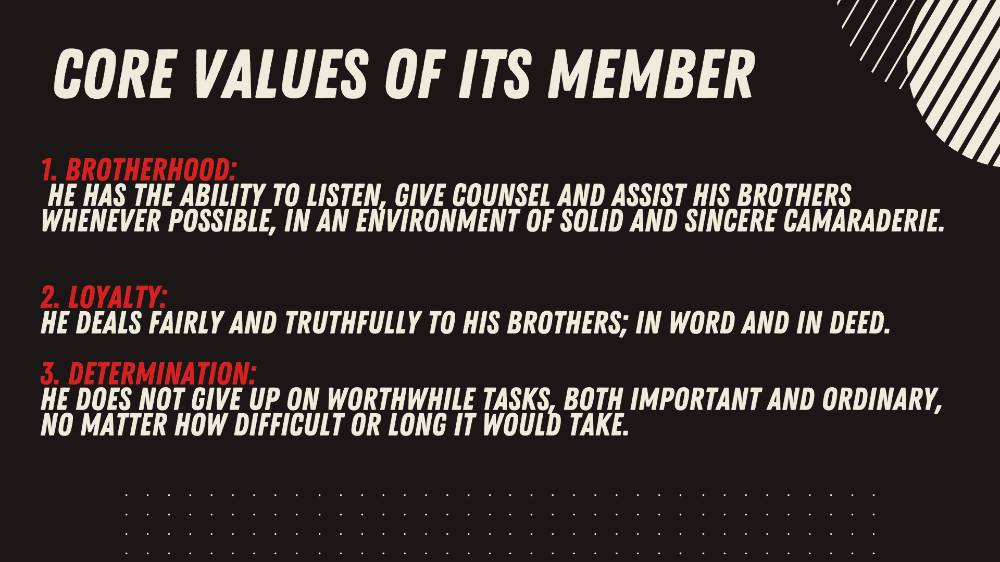
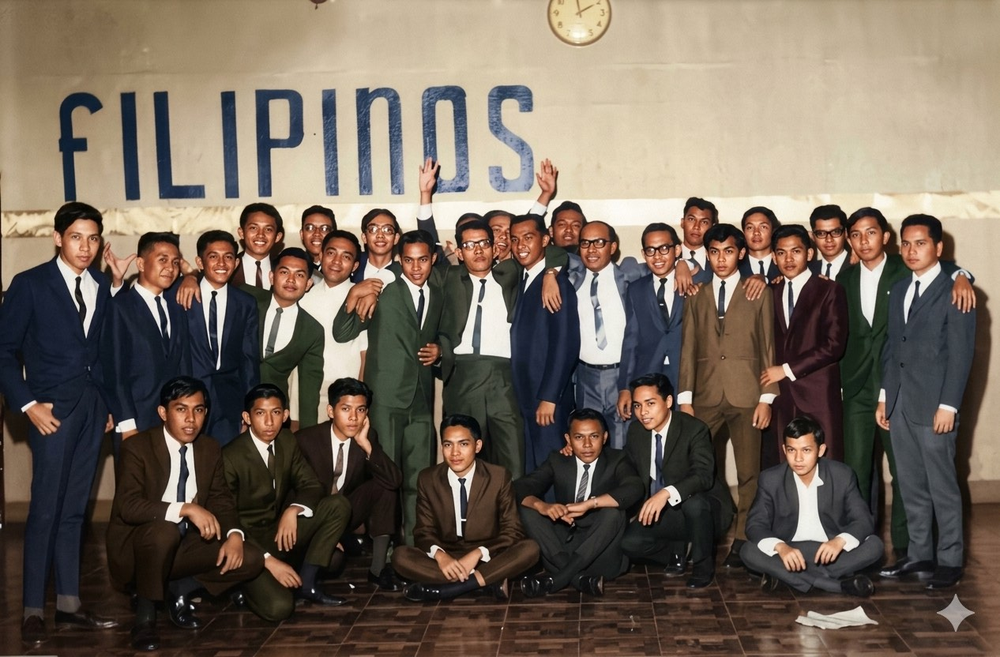
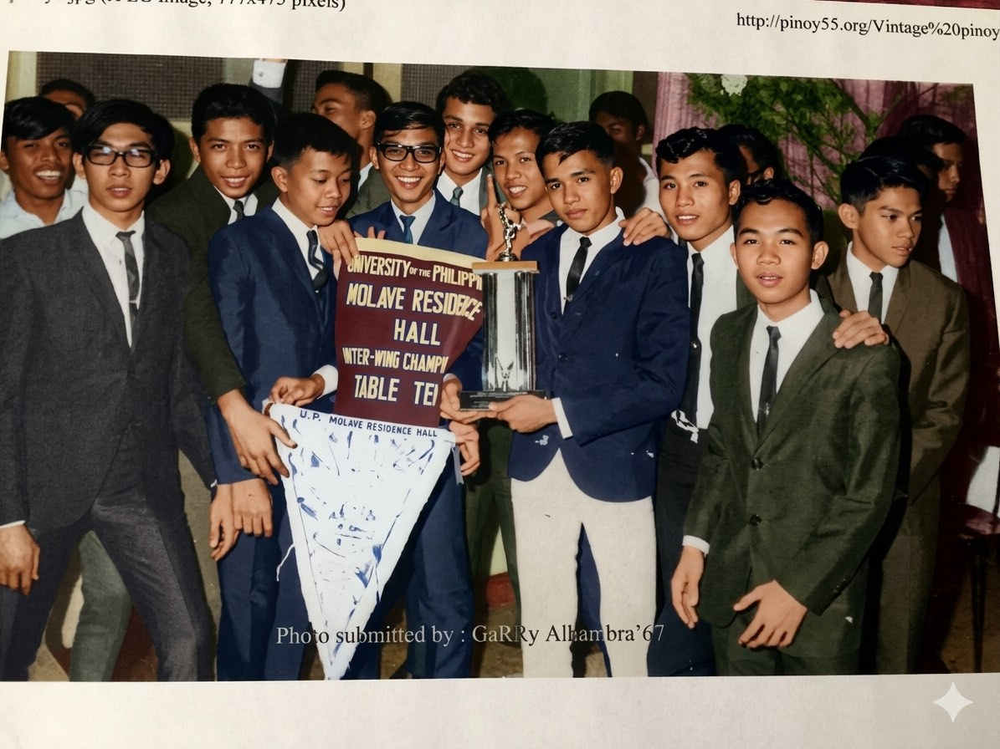
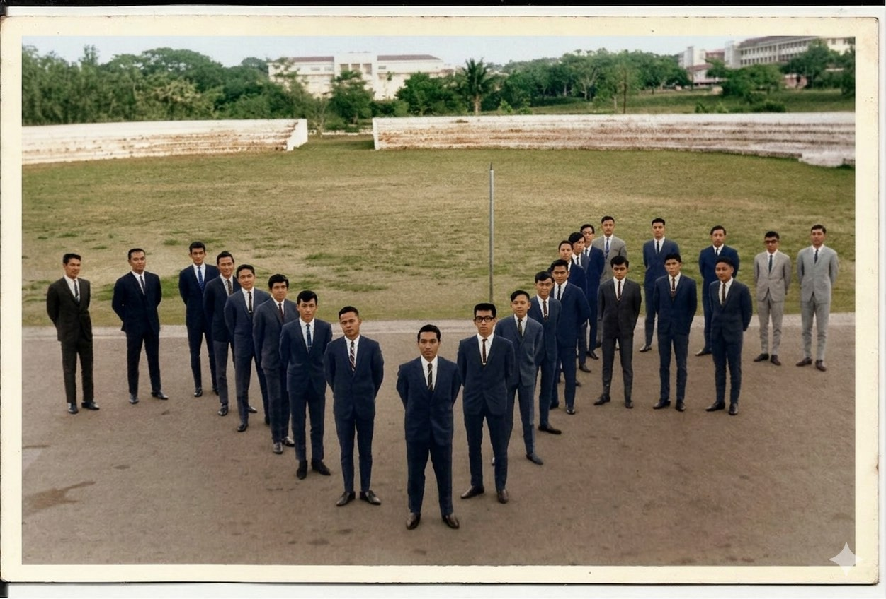
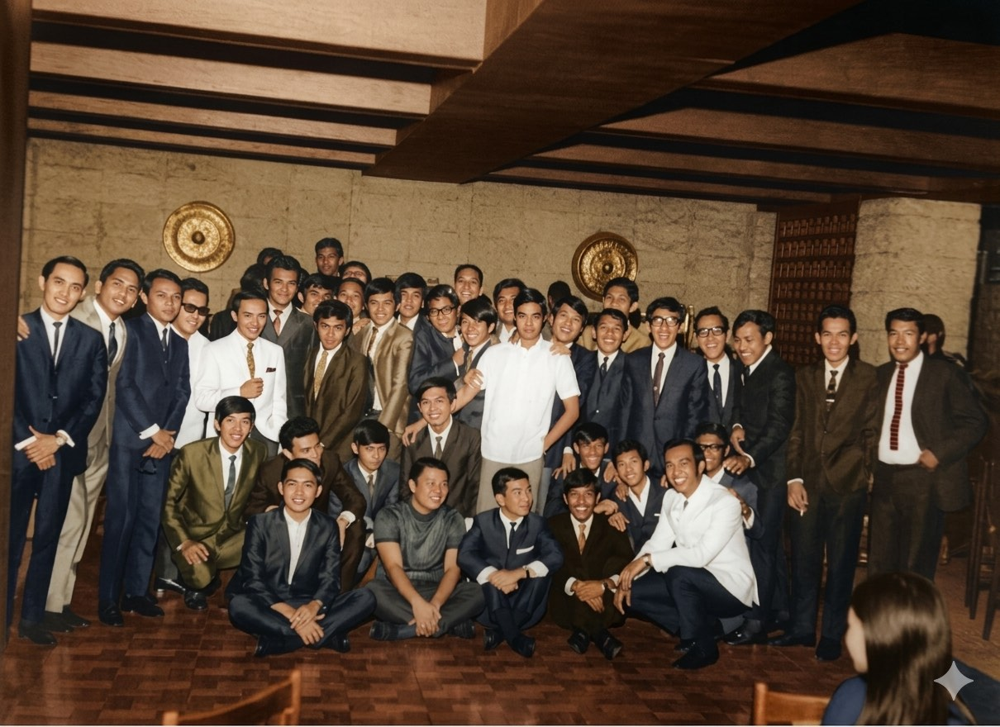
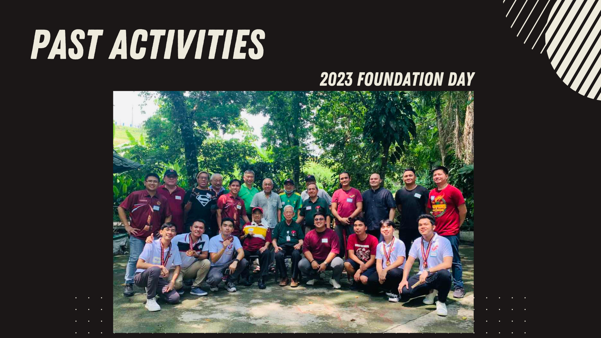
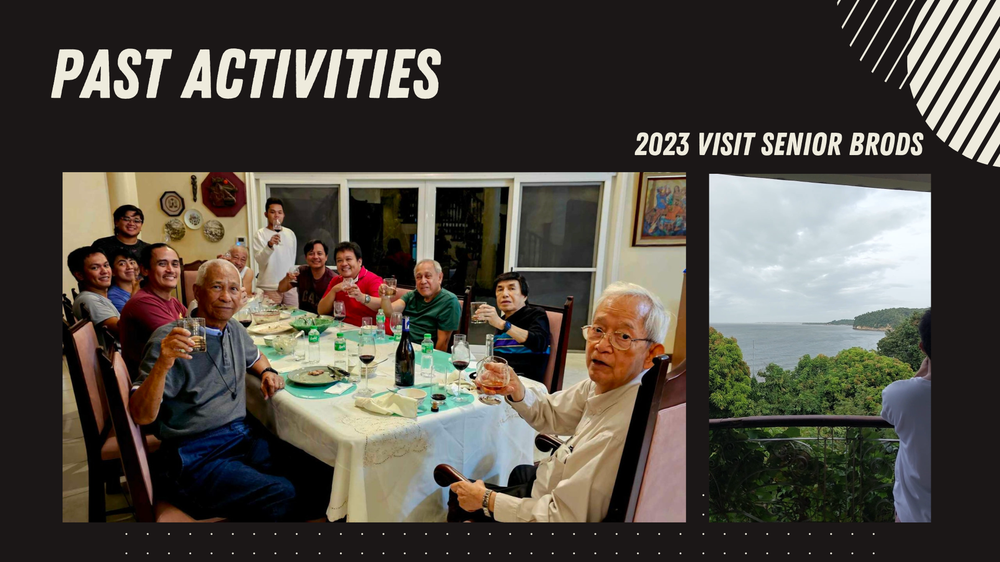
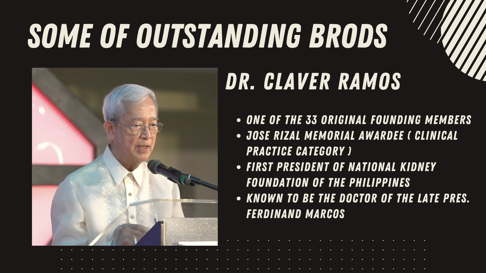

Formation
The founding story anchors the brotherhood in student life at UP Diliman and gives the organization a strong sense of institutional memory.
According to the planning materials, the UP Brotherhood of the Filipinos 55 was formed on May 26, 1956 at the Men’s South Dorm of the UP Diliman campus by 33 Original Filipinos. The same materials also identify the organization as the UP Brotherhood of the Filipinos 1955, UP Filipinos ’55, and Pinoy ’55.
The founding story anchors the brotherhood in student life at UP Diliman and gives the organization a strong sense of institutional memory.
The materials describe a mission to enrich campus life and to establish meaningful programs that benefit members, the brotherhood, and Philippine society.
Brotherhood, loyalty, and determination are presented not as slogans, but as standards for how members should carry themselves toward one another.
The values slide gives a concise but useful picture of the fraternity culture UPBF 55 seeks to sustain. Taken together, these values suggest a brotherhood that prizes reliability, counsel, fairness, and perseverance.
The ability to listen, give counsel, and assist one’s brothers whenever possible in an environment of solid and sincere camaraderie.
A commitment to deal fairly and truthfully with one’s brothers, in both word and deed.
The refusal to give up on worthwhile work, regardless of difficulty or the length of time required to see it through.

The archival images provided for this build convey both formality and warmth: a fraternity that remembers its past, values shared milestones, and keeps group identity visible.




The activity slides reveal a fraternity that continues to gather, travel, serve communities, and maintain ties with senior brods.



The deck presents notable brods whose work spans engineering, medicine, design, retail, shipping, public service, and energy. Presented together, they underscore the breadth of the brotherhood’s alumni network.

Featured as a UP Civil Engineering alumnus, board topnotcher, and CEO of Primary Structures Corp, reflecting the fraternity’s connection to engineering leadership and enterprise.

Highlighted as one of the 33 original founding members, a José Rizal Memorial Awardee in clinical practice, and the first president of the National Kidney Foundation of the Philippines.

Featured in the materials as Bogart the Explorer and identified there with UP Industrial Engineering.
The materials associate him with Prince Hypermarket and with past leadership roles in the Cebu Chamber of Commerce and Industry and the Philippine Retailers Association.
Featured as CEO of Lite Shipping Corporation and as chairman of the Philippine Coastwise Shipping Association in the planning deck.
Highlighted as a multi-awarded Filipino industrial designer and manufacturer with an internationally recognized creative profile.
Presented in the materials as president and CEO of the Philippine National Oil Company.
Identified in the materials as Vice Governor of Cebu and former Governor of Cebu from 2013 to 2019.